축제가 열린 읍면의 관광객 카드 소비가 비교 읍면보다 더 늘었는지 계산하는 AI Agent
문서
AI Agent 기획서
활용 데이터
제주빅데이터센터 카드 이용 현황, 제주데이터허브 유동인구와 주요행사정보
AI 모델
Anthropic Claude Haiku 5.5
제출
2026년 11월
제주 AI·빅데이터 활용 AI Agent 개발 챌린지, AI Agent 기획서
행사 효과 나란히
축제가 열린 읍면의 관광객 카드 소비가 비교 읍면보다 더 늘었는지 나란히 계산하고, 센터 반출 신청까지 할 수 있는 보고서로 만드는 AI Agent입니다.
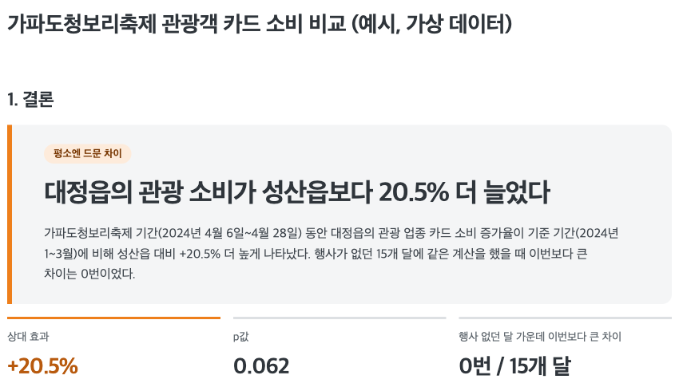
예시 행사 「가파도청보리축제」의 결과 화면. 카드 숫자는 센터 명세서 구조를 따른 가상 데이터로 계산했다.
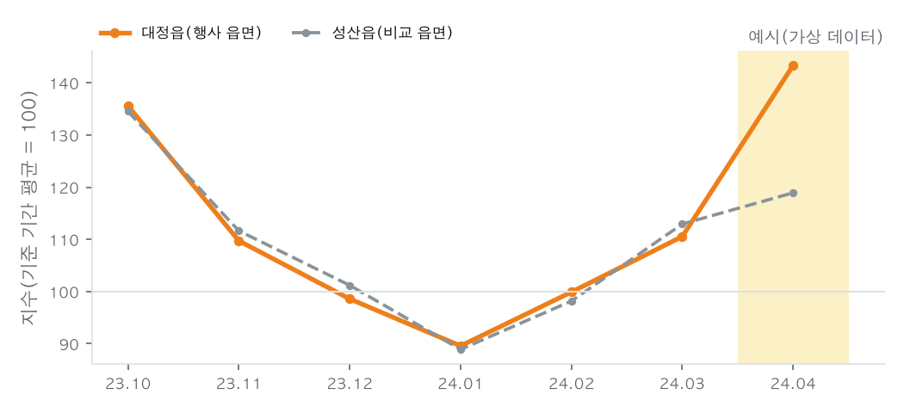
가상 데이터로 그린 달별 관광 소비 지수. 대정읍과 비교 읍면 성산읍이 행사 전에는 나란히 움직이다 행사 달에 벌어진다.
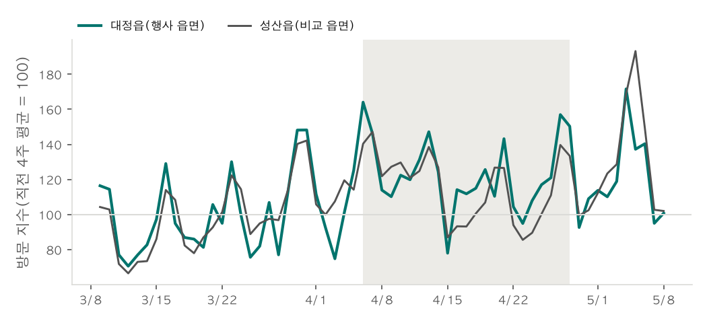
실제 공개 데이터로 그린 날짜별 방문 인구 지수. 행사 기간 대정읍 방문은 직전 4주 같은 요일보다 +20.7%, 비교 후보 가운데 값은 +13.6%였다.
읍면 12곳카드와 유동인구가 같은 이름으로 맞는 범위
약 40초AI 계산 계획, 실행 1회 약 0.01달러
두 단계압축을 풀고 install.bat, run.bat
외부 주소 1개api.anthropic.com, 계획 단계에서만
결과 숫자는 코드가 계산한다AI는 센터 카드 값을 보지 않고 계산 계획만 세운다. 보고서에 들어가는 숫자는 모두 이 PC 안에서 코드가 계산한다.
센터 값은 밖으로 나가지 않는다센터 파일을 넣는 순간 외부 연결을 잠근다. 잠근 뒤 밖으로 나간 요청이 없는지는 자가 점검 버튼으로 확인한다.
1구현목표"축제가 지역 소비를 늘렸나"에 답할 수 있게
읍면 축제를 맡은 담당자는 결과보고서와 다음 해 예산 자료에 축제가 지역 소비에 준 영향을 적어야 합니다. 센터 카드 데이터에는 그 답이 들어 있지만, 흔히 쓰는 "작년 같은 달과 비교"로는 축제의 몫을 가려낼 수 없습니다.
작년 같은 달과 비교하면 생기는 문제
동봉한 공개 유동인구로 직접 계산한 값입니다. 연평균을 1로 두었습니다.
문제
공개 데이터로 본 크기
단순 비교에서 생기는 일
계절
한림읍 8월 방문 지수 2024년 1.44, 2025년 1.40
성수기 축제는 효과와 상관없이 "늘었다"가 나온다
요일
한림읍 토요일 1.19, 수요일 0.89
주말이 많이 낀 행사가 부풀려진다
매년 열리는 축제
작년 같은 달에도 같은 축제가 있었다
효과가 있어도 차이가 0 근처로 나온다
관광 경기
제주 전체 관광객 증감
섬 전체가 오른 몫과 축제의 몫이 섞인다
자료 기간
카드 자료는 2023년 8월부터
2024년 7월 이전 행사는 작년 값이 없다
그래서 이 Agent는 같은 계절과 같은 관광 경기를 함께 겪은 비교 읍면을 고르고, 행사 직전 3개월 대비 증가율을 두 읍면에서 나란히 계산합니다.
분석 주제
행사 기간에 개최 읍면의 관광객 카드 소비가, 행사 전 흐름이 나란했던 비교 읍면보다 더 늘었는가.
AI로 하는 데이터 분석 목표
AI가 공개 유동인구를 직접 조회해 행사 기간 방문이 늘었는지 판단하고, 비교를 흐릴 행사가 따로 열린 읍면을 찾아 이유와 함께 뺍니다.
AI가 행사 성격에 맞는 업종 묶음과 결과 문장 틀을 정하고, 가상 데이터로 계산 경로를 미리 돌려 본 뒤 계획을 확정합니다.
센터 PC 안에서 코드가 계산한 숫자로 결론부터 쓰는 보고서, 그림 2장, 반출 신청용 활용 사유 문안을 만듭니다.
성공 기준
기준
확인 방법
현재
비전문가가 매뉴얼만으로 설치·실행
윈도우 자동 시험, 한글·공백이 든 경로 포함
두 경로 모두 44항목 통과
센터 값 외부 전송 0건
자가 점검 7항목
7항목 통과
결과물이 반출 기준을 지킴
원 금액·건수·인원 없음, 10 미만 칸 처리
결과 폴더에 png·pdf만
AI 계획이 끝까지 세워짐
시험 행사 5개 × 3회
15회 중 13회, 실패 2회는 네트워크 오류
같은 행사는 같은 결론
같은 행사 3회 실행의 가상 데이터 결론
3회 모두 정상 실행된 4개 행사 모두 일치
2서비스 제안데이터 탐색부터 보고서까지 다섯 화면
데이터 활용 개요
쓰는 데이터는 세 가지입니다. 주요행사정보와 읍면동 내국인 유동인구는 제주데이터허브에서 받아 동봉했고, 카드 이용 현황(읍면동)_v02는 제주빅데이터센터에서 이용자가 받아 넣습니다.
행사정보로는 행사 목록을 만들고 계산할 수 있는 행사를 가려내며 같은 시기의 다른 축제를 찾습니다. 유동인구로는 비교 읍면 순위를 매기고, AI가 방문이 늘었는지 조회하며, 방문 그림을 그립니다. 카드 데이터로는 관광객 카드 소비 증가율과 상대 효과를 이 PC 안에서만 계산합니다.
핵심 기능
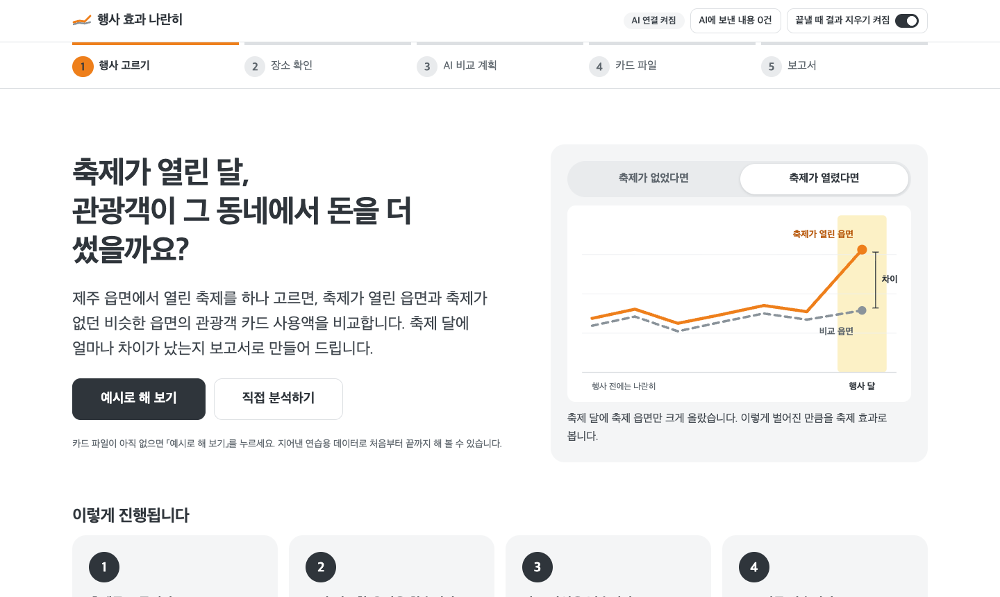
1 행사 고르기. 첫 화면에서 예시나 직접 분석을 고른다. 분석 기간 행사 213건마다 계산할 수 있는지와 이유를 보이고 이름으로 찾는다.
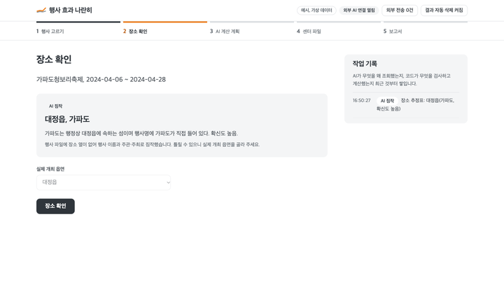
2 장소 확인. 행사 파일에 장소 열이 없어 AI가 짐작한 개최 읍면을 보여 주고, 사람이 확정한다.
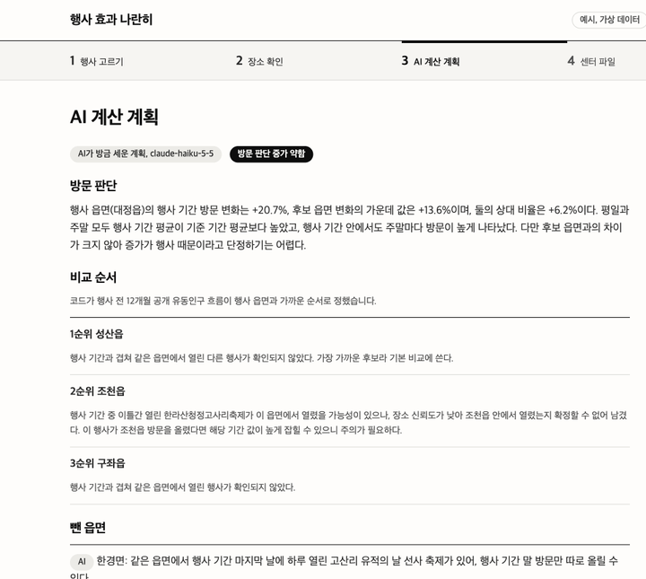
3 AI 비교 계획. 방문객 판단, 비교할 읍면, 뺀 읍면과 이유, 비교할 업종을 한 화면에 보인다.
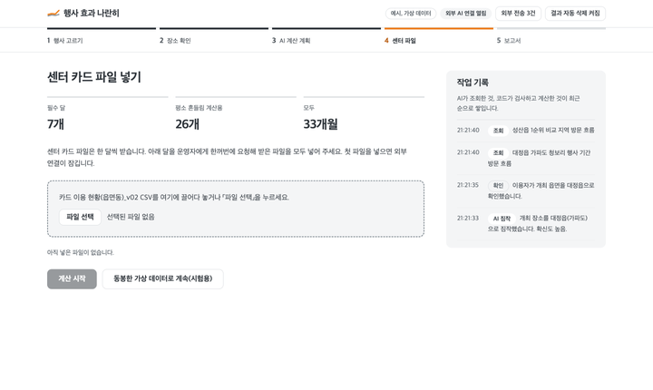
4 카드 파일. 받을 달을 꼭 필요한 7개월과 있으면 더 정확해지는 26개월로 나눠 알려 준다. 첫 파일에서 AI 연결을 끊는다.
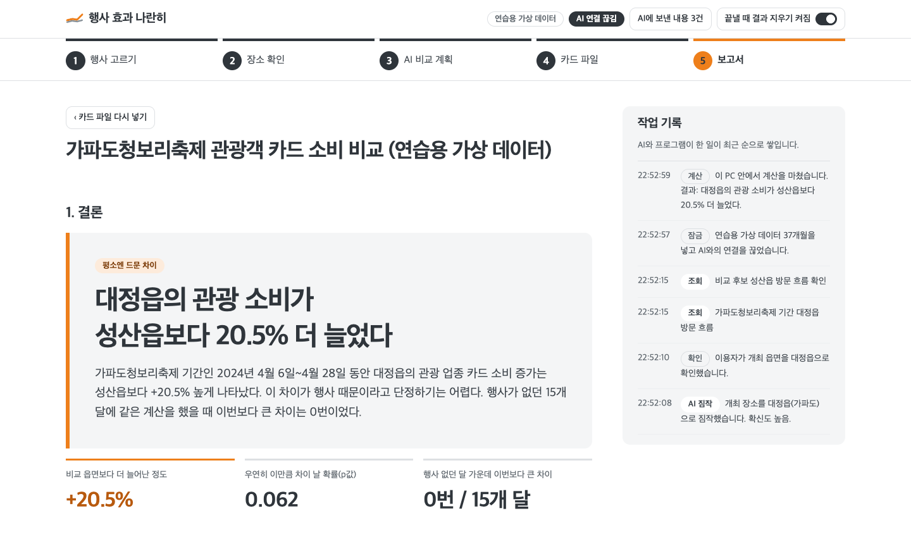
5 보고서. 결론, 상황, 과제, 방법, 결과, 한계와 활용 순서. 화면과 PDF가 같다.
편의성
「예시로 해 보기」로 센터 파일 없이 끝까지 해 볼 수 있다.
오른쪽 작업 기록에 AI가 조회한 것과 코드가 검사한 것이 쌓인다.
계획이 세워진 뒤에는 인터넷이 끊겨도 계산된다.
결과 자동 삭제를 켜고 끌 수 있고, 설정은 다시 켜도 유지된다.
분석데이터 활용 방안
축제 결과보고서와 예산 자료에는 반출 승인을 받은 보고서 PDF를 그대로 붙인다. 문장은 "비교 읍면보다 몇 % 더 늘었다"까지만 쓰고 인과를 단정하지 않아 그대로 인용해도 과장이 되지 않는다.
여러 축제를 같은 방식으로 계산하면 상대 효과와 p값을 같은 잣대로 놓고 볼 수 있다.
반출을 신청할 때는 센터가 요구하는 문형으로 만든 활용 사유 문안을 화면에서 복사해 신청서에 붙인다.
2서비스 제안예시: 가파도청보리축제(2024년 4월 6일~28일)
2026년 11월 16일 오후에 실제 AI로 실행한 기록입니다. 장소를 확인한 뒤 계획이 나오기까지 1분이 걸리지 않았습니다.
AI는 개최 장소를 "대정읍, 가파도"로 짐작했습니다. 가파도는 대정읍 가파리에 속한 섬이라 카드와 유동인구가 대정읍으로 집계됩니다. 그래서 섬 지역인 우도면과 추자면을 비교에서 빼는 규칙과 부딪히지 않습니다.
AI가 대정읍과 1순위 후보 성산읍의 날짜별 방문 곡선을 행사 기간과 기준 기간에 걸쳐 조회했습니다. 조회할 때마다 왜 보는지가 작업 기록에 남습니다.
코드가 AI의 두 제출에 든 숫자를 입력과 하나씩 대조했습니다. 이번 실행은 방문 판단과 계산 계획 모두 첫 제출에 통과했습니다. 측정에서 정상 실행 13회 가운데 8회가 이렇게 바로 통과했고, 5회는 크기 표현이나 빠진 빈칸 때문에 한 번 돌려보낸 뒤 통과했습니다.
AI는 방문을 "증가 약함"으로 판단했습니다. 대정읍이 +20.7% 늘었지만 후보들도 +13.6% 늘어 상대 비율은 +6.2%였습니다. 한경면은 행사 마지막 날인 4월 28일에만 고산리 유적에서 열린 선사 축제 때문에 비교에서 뺐고, 업종은 "관광 소비 전체" 묶음을 골랐습니다.
센터 파일 대신 동봉한 가상 데이터 37개월을 넣자 외부 연결이 잠기고 몇 초 만에 결과가 나왔습니다. "대정읍의 관광 소비가 성산읍보다 20.5% 더 늘었다", p값 0.062, 행사가 없던 15개 달 가운데 이번보다 큰 차이는 0번입니다.
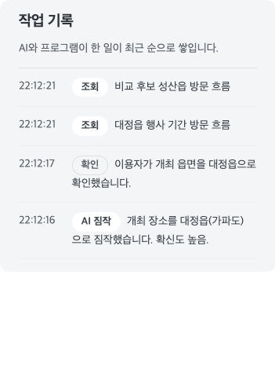
작업 기록. 아래부터 위로 AI 짐작, 사람의 확인, AI의 조회 2번이 쌓였다.
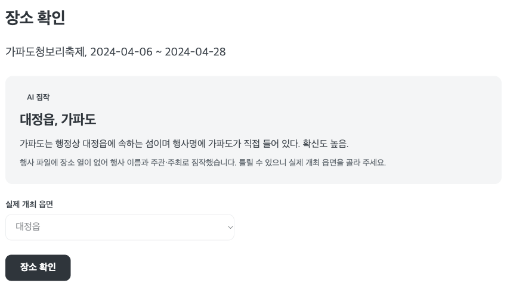
장소 확인. AI 짐작과 그 이유를 보여 주고 사람이 고른다.
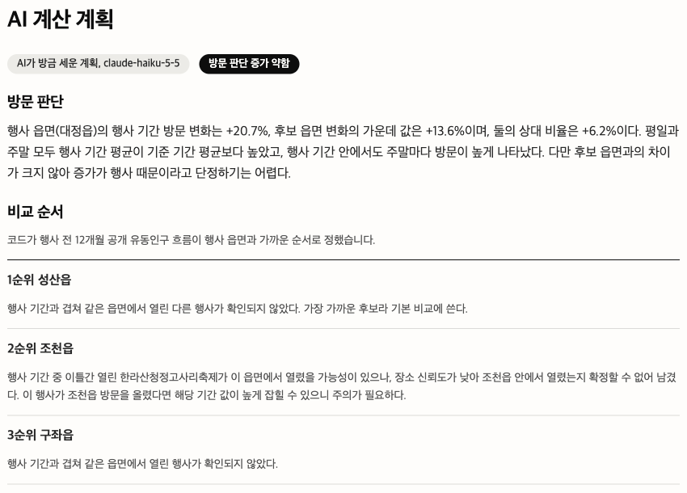
AI 비교 계획. 방문 판단의 숫자는 AI가 쓴 빈칸에 코드가 채웠다.
4데이터 활용 계획필수 데이터
데이터
출처
기간·단위
활용 항목
카드 이용 현황(읍면동)_v02
제주빅데이터센터
2023년 8월부터, 월
기준 연월, 법정동, 업종, 관광객 구분(개별·단체)의 이용 금액으로 증가율을 계산하고, 건수와 인원으로 10 미만 칸을 찾는다
읍면동 단위 내국인 유동인구
제주데이터허브 API
2023-08-01~2026-08-31, 일
읍면, 날짜, 방문 인구(visitPop)로 비교 읍면 순위, 방문 판단, AI 조회 도구, 방문 그림을 만든다
제주특별자치도 주요행사정보
제주데이터허브 파일
522건
행사 이름, 기간, 주관·주최로 행사 목록, 계산 가능 판정, 같은 시기 다른 축제 제외에 쓴다
수집
공개 데이터 두 가지는 개발 때 수집해 ZIP에 동봉했습니다. 실행 중에는 허브를 부르지 않습니다. 유동인구는 읍면 12곳 × 1,127일 × 하루 16행(성별 2 × 연령대 8)이고, 받은 행은 216,349행입니다. 우도면과 추자면은 허브에 없는 날이 있어 결측일로 둡니다.
카드 데이터는 센터 PC에서 이용자가 넣고 그 PC 안에서만 계산합니다. 원본, 조회 결과, 집계값 어느 것도 외부로 보내지 않습니다.
행사 파일에는 장소 열이 없어, 개발 때 AI가 행사 이름과 주관·주최로 224건의 개최 읍면을 짐작한 장소 추정표를 만들었습니다. 화면에는 "AI 짐작"으로 보이고 사람이 확인해야 다음으로 넘어갑니다.
계산할 수 있는 행사
단계
건수
빠진 이유
행사 파일 전체
522
카드 자료 기간에 시작한 행사
213
2023년 8월 전 행사
월 단위로 계산할 수 있는 행사
52
1~3일짜리처럼 한 달 합계에 묻히는 행사 133건, 행사 전 자료가 없는 행사 16건, 92일 넘는 장기 행사 11건, 날짜 오류 1건
그 가운데 AI 짐작이 읍면 12곳 안
27
동 지역, 도 전역, 여러 곳, 장소 모름. 52건 가운데 12건은 행사가 그 달의 절반에 못 미쳐 "희석 주의"로 표시한다
이용 조건
카드 데이터는 센터 분석실 안에서만 쓰고, 결과물은 센터 반출 심사를 거쳐야 밖으로 나갑니다. 이 Agent의 결과물은 반출 기준에 맞춘 그림과 PDF뿐입니다(11쪽).
공개 데이터는 출처를 밝혀 쓰고, 보고서와 화면에 출처를 적습니다.
4데이터 활용 계획결합과 전처리
카드 데이터와 유동인구는 읍면 이름으로 잇습니다. 카드 데이터의 법정동에서 읍면 12곳은 읍면 이름 그대로 나오고, 유동인구의 읍면 이름도 같습니다. 동 지역은 법정동과 행정동이 달라 맞출 수 없으므로 범위에서 뺐습니다.
카드 데이터 전처리 (이 PC 안)
파일 이름이 내려받은 시각이라, 연월은 행마다 기준 연월 열로 판별합니다. 한 파일에 여러 달이 들어 있어도 받습니다.
이미 넣은 달과 겹치는 파일, 같은 행이 두 번 있는 파일, 엑셀로 다시 저장해 인코딩이 바뀐 파일은 받지 않고 이유를 보입니다. 거절할 때는 집계를 전혀 바꾸지 않습니다.
숫자가 NA나 빈칸인 칸은 10 미만으로 봅니다.
건수나 인원이 10 미만인 칸이 계산에 걸리면 그 칸을 업종 묶음 전체로 넓혀 다시 집계합니다. 그래도 10 미만이 남으면 결과를 내지 않습니다.
오류 문구에는 셀 값을 넣지 않습니다.
유동인구 전처리
하루 16행이 다 있는 날만 그날 값으로 쓰고, 빠진 날은 결측일로 둡니다. 한 달 결측일이 10%를 넘으면 그 달은 비교 읍면 거리 계산에서 뺍니다.
방문 인구는 하루 시간대별 인구를 더한 연인원이라 실제 방문자 수가 아닙니다. 그래서 절대값 대신 변화율과 지수로만 씁니다.
요일과 계절 차이가 커서(2쪽 표), 방문 판단은 "직전 4주 같은 요일 평균"과 비교하고, 카드 효과는 같은 계절을 함께 겪는 비교 읍면 대비로 계산합니다.
행사 데이터 전처리
원본 파일(cp949)을 UTF-8로 옮기고 행 번호를 행사 번호로 씁니다. 끝 날짜가 시작일보다 앞서는 행 1건은 계산 대상에서 뺍니다.
행사가 걸친 달마다 그 달 일수 가운데 행사 일수의 비중을 계산합니다. 비중이 0.25 이상인 다른 축제가 있는 읍면은 그 달 비교에서 규칙으로 뺍니다.
달 구성 (가파도청보리축제 예)
구분
달
쓰임
행사 달
2024년 4월
행사 일수가 그 달의 절반 이상인 달
기준 기간
2024년 1~3월
행사 달 바로 앞 3개월
행사 전 흐름 확인
2023년 10~12월
기준 기간 바로 앞 3개월
평소 흔들림용
그 밖의 26개월
행사가 없던 달마다 같은 계산을 해 평소 차이의 크기를 본다
필수 7개월과 평소 흔들림용 26개월, 모두 33개월을 센터 운영자에게 한 번에 요청하도록 화면이 체크리스트로 알려 줍니다.
4데이터 활용 계획분석 방법
계산
증가율 g = 행사 달 평균 ÷ 기준 기간 평균 − 1 (행사 읍면 gT, 비교 읍면 gC) 상대 효과 E = (1 + gT) ÷ (1 + gC) − 1
주 숫자는 상대 효과 E입니다. 증가율의 퍼센트포인트 차이는 성수기에 효과를 부풀려 보조로만 보입니다. 작년 같은 달은 쓰지 않습니다. 매년 열리는 축제는 작년 같은 달에도 효과가 있고, 카드 자료가 2023년 8월부터라 2024년 7월 이전은 작년 값이 없기 때문입니다.
비교 읍면
행사 전 12개월 동안 공개 유동인구 월평균의 로그 차이가 가장 고르게 유지된 읍면부터 코드가 순위를 매깁니다. 상관계수 대신 이 거리를 쓴 것은 두 읍면이 "같은 비율로" 오르내렸는지를 직접 보기 때문입니다. 섬 지역과 계산 기간에 다른 축제가 있는 읍면은 규칙으로 빼고, 규칙이 놓친 경우는 AI가 이유를 들어 더 뺍니다(9쪽).
확인 두 가지
행사 전 흐름부터 확인합니다. 기준 기간을 가짜 행사 기간으로 두고 같은 계산을 한 값 L이 평소 흔들림 σ의 2배 안이어야 그 비교 읍면을 씁니다. 넘으면 다음 순위로 바꾸고, 3순위까지 모두 넘으면 결과를 내지 않습니다. 결과 E는 보지 않고 바꿉니다.
그다음 행사가 없던 달마다 같은 계산을 한 값들로 σ와 p값을 구합니다. p값은 "행사가 없던 달 가운데 이번만큼 큰 차이가 나온 비율"입니다. 이런 달이 9개 미만이면 결과를 내지 않습니다.
결과 문장 규칙
조건
결과
화면 표시
p값 0.1 이하, E가 양수
비교 읍면보다 더 늘었다
평소엔 드문 차이
p값 0.1 이하, E가 음수
비교 읍면보다 덜 늘었다
평소엔 드문 차이
p값 0.1 초과
평소에도 생기는 크기의 차이
평소 수준
조건 미달
계산 불가와 이유 다섯 가지 가운데 하나
계산 불가
숫자는 코드가 채우고 AI는 문장 틀만 씁니다. 어느 경우에도 "축제 때문에"라고 단정하지 않고, 비교 읍면 대비 차이라고 적습니다.
방법의 한계
이 방법은 비교일 뿐 인과를 증명하지 않습니다. 같은 시기 행사 읍면에만 생긴 다른 일은 가려내지 못합니다.
행사 전 흐름 값 L은 3개월 평균이라 한 달짜리 가짜 값으로 구한 σ보다 덜 흔들립니다. 그래서 이 확인은 통과하기 쉬운 쪽으로 기울어 있습니다.
같은 시기 행사 제외와 기준 기간 오염 판정은 행사 파일에 있는 행사만 봅니다.
p값의 최솟값은 1 ÷ (행사 없던 달 수 + 1)입니다. 행사 없던 달이 14개면 0.067이라, 우연히 "드문 차이"가 나올 확률이 약 7%입니다.
3Agent 개발 구성센터 데이터를 볼 수 없는 상태에서 계획하는 AI
이 Agent의 AI는 센터 카드 값을 한 번도 보지 않습니다. 공개 정보로 계산 계획을 세우고, 코드가 그 계획을 검사한 뒤, 잠긴 PC 안에서 코드만 계산합니다. 결과 숫자를 코드가 계산하는 것과 센터 값이 밖으로 나가지 않는 것은 같은 구조에서 나옵니다.
역할과 목표
AI가 하는 일은 두 단계입니다. 첫 단계인 방문 판단에서는 행사 기간에 방문이 늘었는지, 비교를 흐릴 읍면이 있는지를 봅니다. 코드가 행사 정보, 방문 요약값, 비교 후보 순위, 같은 시기 행사를 주면 AI는 판단과 근거, 남길 후보와 뺄 후보, 각각의 이유를 돌려줍니다.
둘째 단계인 계산 계획에서는 행사 성격에 맞는 업종 묶음과 결과를 설명할 문장을 정합니다. 코드가 판단 결과, 비교 순서, 달 구성, 업종 묶음 4개를 주면 AI는 고른 묶음과 이유, 결과 문장 틀 4개, 방법 문단, 이 행사만의 한계를 돌려줍니다.
모델과 도구
모델은 Anthropic Claude Haiku 5.5(claude-haiku-5-5)입니다. 같은 시험에서 Sonnet 5.5도 5회 모두 통과했지만 비용이 15배라 Haiku를 씁니다(12쪽).
조회 도구 get_visit_series는 읍면과 날짜 범위를 받아 동봉한 유동인구의 날짜별 방문 인구와 요일을 돌려줍니다. 한 번에 120일까지입니다.
제출 도구 submit_judgement와 submit_plan은 정해진 모양으로만 제출받습니다. 코드가 검사해 통과시키거나 이유를 붙여 돌려보내고, 단계마다 3번까지 받습니다.
submit_place_table은 개발 때만 쓴 도구로, 행사 224건의 개최 읍면 짐작표를 받았습니다.
키가 없거나 AI가 3번 안에 통과하지 못하면, 계산할 수 있는 읍면 행사 26개는 미리 만든 계획으로 끝까지 갑니다. 고른 읍면이 같을 때만입니다.
측정 (시험 행사 5개 × 3회, 2026년 11월 16일, 통과 횟수는 12쪽)
정상 실행 13회 모두 조회 도구를 썼고, 실행당 평균 2.2번이었습니다.
정상 실행 13회 기준으로 실행당 호출은 3~4번, 비용은 0.009달러, 시간은 27~56초(평균 41초)였습니다.
장소 추정표는 무작위 30건 가운데 공개 자료로 장소를 확인한 25건에서 20건(80%)이 맞았습니다. 3건은 틀렸고 2건은 AI가 모른다고 했습니다. 시험 행사 5개는 3개가 맞았습니다. 틀린 짐작은 장소 확인 화면에서 사람이 고칩니다.
3Agent 개발 구성판단 및 자율 수행 범위
단계
AI가 판단
코드가 검사·계산
사람이 확인
장소
행사 이름으로 개최 읍면 짐작(개발 때)
읍면 12곳 밖이면 계산하지 않음
개최 읍면 확정
방문 판단
공개 유동인구를 직접 조회해 증가 판단과 이유
근거 키, 숫자 근거 대조
판단 문장 읽기
비교 읍면
규칙이 놓친 방해 행사로 추가 제외, 남긴 이유
섬·다른 축제·자료 없음 규칙 제외, 거리 순위, 후보 2곳 미만이면 멈춤
비교 순서 확인
계획
업종 묶음 4개 가운데 선택과 이유, 결과 문장 틀, 방법 문단, 이 행사만의 한계
필수 빈칸, 인과 단정 표현, 숫자 근거 대조, 가상 데이터 리허설
계산·결과
하지 않음. 센터 데이터를 볼 수 없다
10 미만 처리, 비교 계산, 행사 전 흐름, 행사 없던 달 시험, 문장 채우기
결과 확인, 반출 신청
규칙으로 정할 수 없어 AI에 맡긴 판단
아래는 2026년 11월 15일 측정 실행에서 AI가 실제로 쓴 이유입니다. 두 행사에서 업종 묶음과 이유가 달라집니다.
가파도청보리축제에서 AI는 업종으로 관광 소비 전체(24개 업종)을 골랐습니다. AI가 쓴 이유는 이렇습니다. "청보리밭을 둘러보고 식사와 간식을 하는 경관·문화 행사라서, 음식점과 숙박뿐 아니라 편의점, 선물용품 소매, 교통 등 방문객이 쓰는 업종이 함께 움직였을 것으로 본다."
2024 자청비 와흘메밀문화제에서 AI는 업종으로 먹거리·음료 중심(14개 업종)을 골랐습니다. AI가 쓴 이유는 이렇습니다. "메밀 음식을 맛보러 오는 먹거리 중심 축제이므로, 행사로 늘었을 소비는 음식점과 음료점 업종에 가장 먼저 나타날 것으로 본다."
가파도청보리축제에서 AI는 한경면을 비교에서 뺐습니다. AI가 쓴 이유는 이렇습니다. "행사 기간 마지막 날 한경면 고산리 유적에서 열린 1일 축제가 한경면 방문을 행사 기간에만 움직일 수 있다. 같은 장소의 상시·장기 운영 행사는 기준 기간과 행사 기간에 걸쳐 있어 빼지 않았다."
혼인지 수국 축제에서 AI는 구좌읍을 비교에서 뺐습니다. AI가 쓴 이유는 이렇습니다. "구좌읍에서 반딧불이 탐방 행사가 행사 기간과 겹쳐 따로 열렸다. 행사 규모는 공개 정보로 확인되지 않았고 장소는 중간 신뢰도다."
하루짜리 행사는 걸침 비중(0.25 이상)으로 거르는 규칙에 걸리지 않습니다. 반대로 상시 운영 행사는 규칙상 걸리지만 비교를 흐리지 않습니다. 이런 경계가 AI에 맡긴 몫입니다.
AI가 마음대로 하지 못하게 한 장치
AI가 쓴 글의 숫자는 입력이나 조회 결과에 있어야 통과합니다. 날짜, 순위, 개수, 연월 코드, 행사 번호를 모두 대조합니다. 크기 표현(급증, 배, 퍼센트, 크게)은 돌려보냅니다.
AI는 숫자가 필요한 자리에 빈칸을 쓰고, 코드가 그 빈칸을 채웁니다. 방문 변화율처럼 계획 때 아는 값은 계획을 받을 때, 비교 읍면 대비 차이처럼 계산 뒤에야 아는 값은 계산 뒤에 채웁니다. 계산 뒤에야 아는 빈칸은 결과 문장 틀에만 쓸 수 있습니다.
AI는 업종을 코드가 정해 둔 묶음 4개 가운데에서만 고릅니다. 업종을 자유롭게 고르게 했을 때는 같은 행사 3회 실행에서 범위가 5개 행사 모두 달랐고, 묶음으로 바꾼 뒤에는 5개 행사 모두 매번 같은 묶음을 골랐습니다.
계획은 다른 난수로 만든 가상 데이터로 계산 경로를 끝까지 돌려 본 뒤에만 계획을 받습니다.
비교 읍면 순서와 교체는 코드가 정하고, AI는 후보를 뺄 수만 있습니다.
5개발·탑재 계획외부 전송 경계
외부로 요청을 보내는 코드는 파일 하나(egress.py)뿐이고, 실행 중 외부 주소는 https://api.anthropic.com 하나입니다.
AI 단계는 센터 파일을 넣기 전에 모두 끝납니다. 첫 센터 파일을 받기 직전에 외부 연결을 잠그고, 잠긴 뒤의 AI 호출은 보내지 않고 막습니다. 위쪽 띠가 "AI 연결 끊김"으로 바뀝니다.
보낸 요청은 시각, 단계, 결과와 함께 「AI에 보낸 내용」에 남고 본문을 펼쳐 볼 수 있습니다. 보내는 것은 행사 이름과 날짜, 공개 유동인구 요약과 조회 결과, 비교 읍면 거리 표, 같은 시기 행사 목록, 장소 짐작, 가상 데이터 리허설의 검사 결과 문장뿐입니다.
서버는 이 PC의 127.0.0.1에서만 열립니다. 다른 PC에서 접속할 수 없고 윈도우 방화벽 창도 뜨지 않습니다.
원격 측정을 내보내는 부품은 묶음에 넣지 않았습니다. 자가 점검이 이것도 확인합니다.
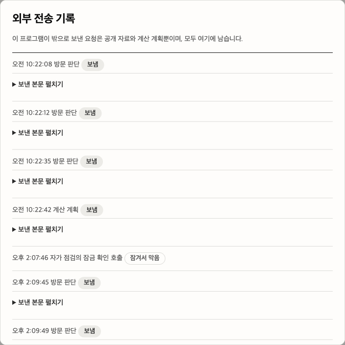
「AI에 보낸 내용」 창. 보낸 요청마다 시각, 단계, 결과가 남고 보낸 본문을 펼쳐 볼 수 있다. 잠긴 뒤의 호출은 "잠겨서 막음"으로 남는다.
자가 점검 (버튼 하나)
실행마다 무작위 9자리 표시값을 심은 센터 형식 가상 CSV로 끝까지 돌린 뒤 7개 항목을 판정합니다.
점검하는 항목은 일곱 가지입니다. 잠금 뒤 외부 요청이 0건인지, 잠금 뒤 일부러 한 AI 호출이 보내지지 않고 막혔는지, 외부 전송 기록과 결과 글자에 각각 표시값이나 그 칸의 합계가 0건인지, 결과 폴더에 png와 pdf만 있는지, 원격 측정 내보내기 부품이 없는지, 점검 뒤 잠금이 풀렸는지입니다.
평가자가 직접 해 볼 수 있는 확인
계산 계획이 준비된 뒤 Wi-Fi를 끄거나 랜선을 뽑습니다.
「동봉한 가상 데이터로 계속」과 「계산 시작」을 누르면 인터넷 없이 결과와 PDF가 나옵니다.
위쪽 「AI에 보낸 내용」 숫자는 잠금 뒤 늘지 않습니다.
센터 실행환경과 외부 서비스 의존성
Anthropic API는 계획 단계에서만, 행사 1건에 3~4번 부릅니다. 연결이 안 되어도 미리 만든 계획이 있는 행사 26개는 끝까지 동작하고, 계산, 보고서, 자가 점검은 AI 없이 동작합니다.
제주데이터허브는 실행 중에 부르지 않습니다. 자료를 동봉했기 때문입니다. 공개 자료를 갱신할 때만 운영자가 수집 도구를 실행합니다.
패키지 34개도 동봉해서 설치할 때 인터넷을 쓰지 않습니다.
5개발·탑재 계획결과물과 반출
결과물은 보고서 PDF 한 개와 그림 png 두 장입니다. PDF는 화면과 같은 순서(결론, 상황, 과제, 방법, 결과, 한계와 활용)로, 담당자가 첫 쪽만 읽어도 결론과 그 근거 숫자를 알 수 있게 썼습니다.
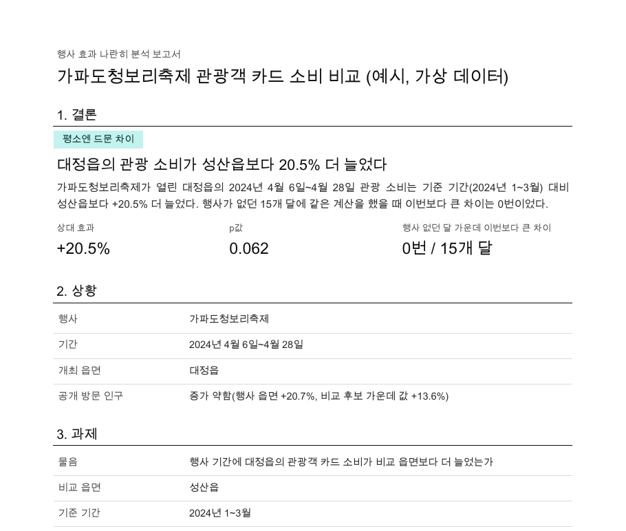
보고서 PDF 1쪽 윗부분. 결론과 상황.
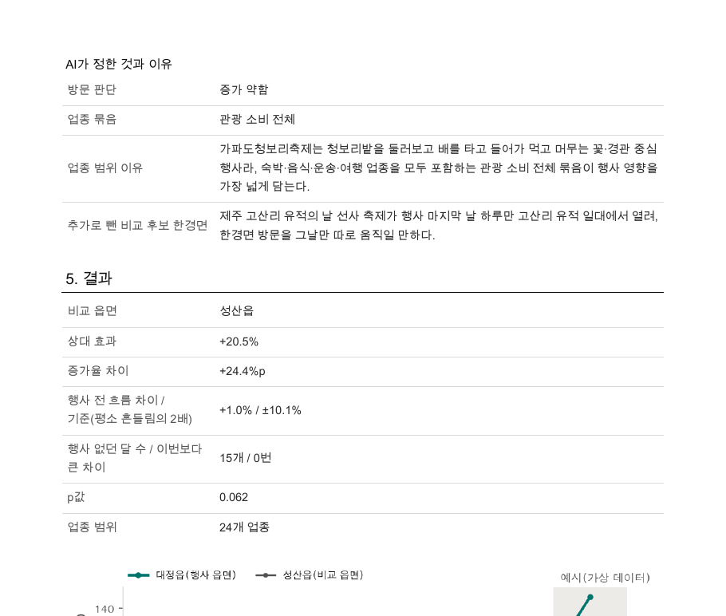
보고서 PDF 2쪽 윗부분. 방법의 단계와 AI가 정한 것.
반출 기준과 대응
센터 반출 기준
이 Agent의 대응
역산할 수 있는 값 금지
증가율, 상대 효과, 지수, 개수만 쓴다. 원래 금액·건수·인원은 화면, 그림, PDF 어디에도 없다. 지수는 기준 기간 평균을 100으로 둔 값이다
10 미만 값 처리
건수나 인원이 10 미만인 칸은 업종 묶음 전체로 넓혀 다시 집계한다(범주처리). 그래도 남으면 결과를 내지 않는다
활용 사유
"(툴)으로 분석 후 (가공)으로 가공하여 (내용)의 보고서 작성 및 (어디)에 활용" 문형을 채운 문안을 만든다. 출처, 데이터 기간, 파일 구분(분석결과)까지 넣는다
텍스트·스프레드시트는 원칙적으로 불가
결과 폴더에는 png와 pdf만 만든다. 자가 점검이 파일 종류를 확인한다
파일 깨짐, 낯선 확장자
PDF는 맑은 고딕을 넣어 만들고, 그림은 png다
퇴실 때 반출 승인 자료 외 삭제
결과 자동 삭제 켜기·끄기. 「끝내기」는 메모리의 센터 집계, 작업 기록, 외부 전송 기록을 지우고, 자동 삭제가 켜져 있으면 결과 파일도 지운다
화면에는 "반출 신청 가능(사전 점검 기준)"으로만 표시합니다. 실제 반출 승인은 센터 심사자가 합니다.
활용 사유 문안은 이렇게 나옵니다. AI Agent 「행사 효과 나란히」(Python)의 이중차분 분석으로 분석 후, 읍면별 관광객 카드 이용 증가율 산출과 인원·건수 10 미만 칸의 업종 묶음(범주처리)으로 가공하여, 가파도청보리축제(2024년 4월 6일~4월 28일) 개최 읍면과 비교 읍면의 관광객 카드 이용 증가율 차이에 관한 보고서 작성 및 결과보고서에 활용. 출처: 제주빅데이터센터, 카드 이용 현황(읍면동)_v02(2023년 10월~2026년 8월), 파일 구분: 분석결과
5개발·탑재 계획검증과 한계
가상 데이터 두 판으로 계산 검증
센터 명세서 구조를 따른 가상 카드 데이터를 두 판 만들었습니다. 한 판은 시험 행사의 행사 달에 효과를 심었고, 다른 판은 심지 않았습니다. 비교 후보는 규칙 순위 그대로 두고 업종 묶음 두 가지로 계산했습니다.
시험 행사
묶음
효과를 심은 판
심지 않은 판
가파도청보리축제
관광 소비 전체
더 늘었다 +20.5%, p 0.062
평소 수준 −7.4%, p 0.25
먹거리·음료 중심
더 늘었다 +31.3%, p 0.062
평소 수준 +0.9%, p 0.81
혼인지 수국 축제
관광 소비 전체
더 늘었다 +13.4%, p 0.067
평소 수준 −5.9%, p 0.33
먹거리·음료 중심
더 늘었다 +11.1%, p 0.067
덜 늘었다 −7.5%, p 0.067
와흘메밀문화제
관광 소비 전체
더 늘었다 +19.5%, p 0.056
평소 수준 −0.2%, p 0.94
먹거리·음료 중심
더 늘었다 +14.9%, p 0.056
평소 수준 −4.1%, p 0.33
보롬왓 튤립축제, 마노르블랑 꽃향기축제
두 묶음
두 판 모두 계산 불가. 같은 장소 축제가 이어져 행사 없던 달이 8개뿐이다
효과를 심은 판은 6개 조합 모두 잡았고, 심지 않은 판은 1개가 "덜 늘었다"로 잘못 나왔습니다. 행사 없던 달이 14개면 우연히 이런 결과가 나올 확률이 약 7%라 그 크기에 맞습니다.
AI 단계 측정 (시험 행사 5개 × 3회, 2026년 11월 16일)
계획은 15회 중 13회 끝까지 세워졌습니다. 실패 2회는 와흘의 네트워크 오류였고, 와흘만 3회 더 돌려 모두 통과했습니다.
정상 13회 가운데 8회는 한 번에 통과했고 5회는 한 번 돌려보낸 뒤 통과했습니다. 돌려보낸 이유는 모두 크기 표현이나 빠진 빈칸이었습니다.
같은 행사를 3회 돌렸을 때 방문 판단은 3회 모두 정상 실행된 4개 행사에서 모두 같았습니다. 가상 데이터 결론도 4개 행사 모두 같았습니다.
업종 묶음은 5개 행사 모두 매번 같았습니다. 와흘은 추가 실행까지 4회 모두 먹거리·음료 중심이었습니다.
남긴 비교 후보까지 같았던 행사는 4개 중 1개입니다. 나머지는 3회 중 1회에서 추가 제외가 달랐는데, 비교 순서는 코드가 정하므로 결론에는 영향이 없었습니다.
Sonnet 5.5는 5회 모두 통과했지만 실행당 0.199달러로 Haiku 5.5(0.0132달러)의 15배였습니다.
설치·자동 시험
자동 시험 77개: 계산, 센터 CSV의 이상 형식, 10 미만 처리, 숫자 근거 대조, 계획 검사, 리허설, 자가 점검, 결과 삭제.
외부 호출은 벽시계로 65초를 넘기면 끊고 대체 경로로 넘어갑니다. 측정 중 네트워크가 멈춘 두 번은 이 장치 전이라 510초, 362초를 기다렸습니다.
윈도우 자동 시험: 제출할 묶음을 그대로 만들어 윈도우 서버에서 설치부터 결과 삭제까지 44항목을 돌립니다. C 드라이브 바로 아래와, 한글과 공백이 든 바탕 화면 폴더 두 곳에서 모두 통과했습니다. PDF에는 맑은 고딕이 들어갑니다.
남은 한계
검증은 가상 데이터로만 했습니다. 실제 카드 데이터에서 효과 크기와 계산 불가 비율은 다를 수 있습니다.
시험 행사 5개 중 2개가 계산 불가였습니다. 같은 장소에서 축제가 이어지는 곳은 평소 흔들림을 계산할 달이 모자랍니다.
읍면 12곳만 다룹니다. 제주시·서귀포시 동 지역 행사는 계산하지 않습니다.
장소 짐작은 무작위 표본에서 80% 맞았습니다. 읍면 행사를 "동 지역"으로 잘못 짐작하면 기본 목록에서 빠지므로 「볼 수 있는 행사만」을 끄고 찾습니다.
5개발·탑재 계획기술 환경, 설치, 구현 범위
대상은 Windows 11(64비트), Chrome과 Edge, 1920×1080이고 GPU를 쓰지 않습니다.
이 PC의 127.0.0.1에서만 여는 로컬 웹 서버(FastAPI)와 브라우저 화면으로 동작합니다. 포트는 18501을 쓰고, 다른 프로그램이 쓰고 있으면 18510까지 빈 곳을 찾습니다.
Python 3.11.9 윈도우용 묶음(python.org 공식 파일)을 ZIP에 동봉해 따로 설치하지 않습니다.
패키지 34개도 윈도우용 설치 파일로 동봉해 인터넷 없이 설치합니다. 주요 패키지는 FastAPI, uvicorn, matplotlib, fpdf2, anthropic입니다.
설치는 ZIP을 풀고 install.bat을 한 번 실행하면 끝나고, 이후에는 run.bat으로 실행합니다. ZIP은 약 57MB입니다.
키는 운영 때 센터 담당자가 환경변수 ANTHROPIC_API_KEY로 설정합니다. 환경변수가 없으면 평가용 키 파일을 읽습니다.
실행 중 외부 주소는 https://api.anthropic.com 하나입니다. 막히면 미리 만든 계획이 있는 행사 26개는 그 계획으로 동작합니다.
프로그램 화면과 결과 PDF 모두 윈도우의 맑은 고딕을 쓰고 웹 글꼴을 내려받지 않습니다.
UI
행사 읍면은 주황 실선, 비교 읍면은 회색 점선, 행사 달은 노란 띠로 화면, 결과 그림, PDF가 같은 색을 씁니다. 첫 화면에는 두 선이 행사 달에 벌어지는 그림을 두었습니다. 위쪽 띠에는 예시 여부, 외부 AI 연결 상태, 외부 전송 건수, 결과 자동 삭제 상태를 늘 보이고, 그 아래 진행 띠가 지금 단계를 주황으로 표시합니다. 작업 기록은 시작한 뒤 오른쪽에 쌓입니다. 창 크기에 따라 글씨와 버튼이 함께 커지고 작아지며, 좁은 화면에서는 작업 기록이 본문 아래로 내려갑니다.
설치 점검 8항목 (install.bat)
install.bat은 여덟 가지를 점검합니다. Python 판이 3.11.9인지, UTF-8 모드인지, 모든 패키지가 불러와지는지, 윈도우 기준으로 빠진 의존성이 없는지, 한글 그림(png)이 그려지는지, 현재 폴더 경로에서 카드 CSV가 읽히는지, 원격 측정 내보내기 부품이 없는지, 외부 AI 호출이 되는지입니다. 마지막 항목은 키가 없으면 건너뜁니다.
외부 AI 호출만 실패하면 키나 인터넷 문제로 안내하고, 나머지 기능은 그대로 쓸 수 있다고 알려 줍니다.
구현한 것과 이번에 뺀 것
구현한 것은 행사 목록과 계산 가능 판정, 이름 검색, AI의 방문 판단·추가 제외·업종 묶음과 그 검사·리허설, 센터 CSV 검사, 10 미만 묶기, 비교 계산, 보고서 PDF, 잠금, 외부 전송 기록, 자가 점검, 결과 삭제입니다. 이번에 뺀 것은 네 가지입니다.
목록에 없는 새 행사를 직접 입력하는 기능. 운영자가 행사 파일을 바꾸고 장소 추정표를 다시 만들면 됩니다(14쪽).
1순위 비교 읍면이 교체되는 장면을 보여 줄 가상 데이터. 교체 규칙은 구현하고 시험했습니다.
동 지역. 법정동과 행정동을 맞출 표가 필요합니다.
파일 경로를 직접 적는 예비 입력 칸. 끌어다 놓기와 파일 고르기로 충분했습니다.
5개발·탑재 계획센터 운영과 확장
운영 순서
센터 담당자가 ZIP을 풀고 install.bat을 한 번 실행합니다. 환경변수 ANTHROPIC_API_KEY에 센터 키를 넣습니다.
이용자가 집이나 센터에서 행사를 고르고 장소를 확인하면 AI 계획과 받을 달 체크리스트가 나옵니다. 가파도청보리축제는 33개월입니다.
센터는 카드 데이터를 한 달씩 내주므로, 체크리스트의 달을 운영자에게 한 번에 요청합니다.
센터 PC에서 받은 파일을 넣으면 외부 연결이 잠기고, 계산과 보고서가 몇 초 만에 나옵니다.
마지막으로 활용 사유를 복사해 반출을 신청하고 「끝내기」를 누릅니다. 결과 자동 삭제가 켜져 있으면 결과 파일까지 지웁니다.
운영 비용
AI는 계획 단계에서만 쓰고 행사 1건에 약 0.01달러입니다(11/16 측정 평균 0.009달러, Haiku 5.5 입력 100만 토큰 0.10달러, 출력 100만 토큰 0.50달러). 100건을 분석해도 약 1달러입니다. 계산과 보고서는 비용이 들지 않습니다.
AI를 쓸 수 없을 때
AI에 연결하지 못해도 예시 행사와 읍면 행사 26개는 미리 만든 계획으로 끝까지 됩니다. 센터 파일 검사, 계산, 보고서와 PDF, 자가 점검, 결과 삭제도 AI 없이 됩니다. 안 되는 것은 그 밖의 행사의 계산 계획 하나이고, 이때는 AI 연결이 필요하다고 안내합니다.
공개 자료 갱신
유동인구는 동봉한 수집 도구로 운영자가 새로 받습니다. 허브에는 하루 호출 한도가 있어 12곳 37개월을 새로 받으면 약 2,300회로 며칠이 걸리지만, 새 달만 받으면 12곳 약 60회입니다. 끝 날짜를 지정해 이어 받습니다.
행사 목록은 허브에서 새 행사 파일을 받아 변환 도구로 옮깁니다. 장소 짐작이 없는 새 행사는 「모름」으로 보이고 장소 확인 화면에서 사람이 고릅니다. 장소 추정표 전체를 AI로 다시 만드는 명령도 동봉했습니다.
미리 만든 계획은 측정 도구의 한 명령으로 계산할 수 있는 읍면 행사 전체에 대해 다시 만듭니다. 비용은 행사 1건에 약 0.01달러입니다.
확장
동 지역 행사를 다루려면 법정동과 행정동을 맞추는 표가 필요합니다. 공개 유동인구가 행정동 단위이기 때문입니다.
외국인 관광객은 카드 데이터의 외국인 구분과 공개 외국인 유동인구가 있으면 같은 방식으로 볼 수 있습니다.
목록에 없는 행사는 행사 이름, 기간, 장소를 직접 입력하는 화면을 더하면 됩니다. 계산 경로는 그대로 씁니다.
여러 축제를 한 번에 보려면 같은 방식으로 계산한 결과를 한 표로 모으는 화면이 필요합니다.
사용 내역과 출처AI, API, 데이터, 오픈소스
AI 사용
Anthropic Claude Haiku 5.5(claude-haiku-5-5)는 방문 판단과 비교 읍면 추가 제외, 업종 묶음과 문장 틀에 쓰고, 개발 때 한 번 장소 추정표를 만드는 데 썼습니다. 이 모델이 보는 것은 공개 데이터, 행사 파일, 가상 데이터 리허설의 통과 여부입니다. 센터 카드 데이터의 값, 행 수, 집계, 10 미만 칸 위치는 보지 않습니다.
개발 도구로는 Anthropic의 Claude Code를 썼습니다. 개발 중 코드 작성 보조, 설계 검토, 문서 초안에 썼고, 이 프로젝트의 코드와 공개 자료, 가상 데이터만 다뤘습니다. 센터 실제 데이터는 갖고 있지 않아 보여 준 적이 없습니다.
외부 API
Anthropic Messages API (https://api.anthropic.com). 실행 중 유일한 외부 주소입니다.
제주데이터허브 API. 개발 때 유동인구 스냅샷 수집에만 썼습니다.
데이터
제주빅데이터센터, 카드 이용 현황(읍면동)_v02. 개발과 평가에는 명세서 구조를 따른 가상 데이터를 썼습니다.
제주데이터허브, 읍면동 단위 내국인 유동인구.
제주데이터허브, 제주특별자치도 주요행사정보.
오픈소스 (주요)
이름
버전
라이선스
Python
3.11.9
PSF
FastAPI
0.162.5
MIT
uvicorn
0.54.0
BSD-3-Clause
Starlette
1.10.0
BSD-3-Clause
Pydantic
2.14.3
MIT
matplotlib
3.11.2
PSF 계열
NumPy
2.4.6
BSD-3-Clause 외
Pillow
13.0.0
MIT-CMU
fpdf2
2.9.0
LGPL-3.0-only
fontTools
4.68.0
MIT
anthropic
2.8.0
Apache-2.0
전체 34개의 버전, 라이선스, 원문 위치는 묶음 맨 위 THIRD_PARTY_NOTICES.txt에 있습니다. 모두 고치지 않고 담았고, LGPL인 fpdf2는 파이썬 원본 그대로라 이용자가 바꿔 넣을 수 있습니다. PDF 글꼴은 동봉하지 않고 윈도우의 맑은 고딕을 읽습니다.
결과물 권리
이 Agent는 대회 규정에 따라 센터가 비독점으로 이용할 수 있습니다. 저작권은 양도하지 않습니다.